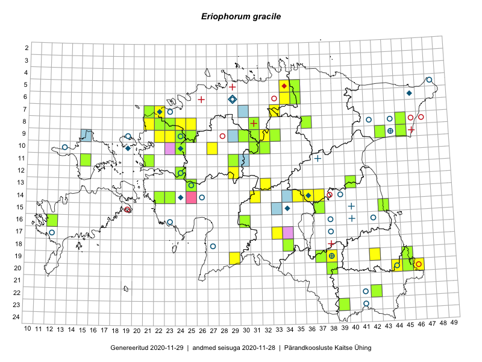

Eriophorum gracile
Uuendatud: 2016-12-01
Kaardile koondatud taksonid: Eriophorum gracile W.D.J.Koch ex Roth

Kaart põhineb 27 kirjel, neist vaatlusi 20 ja eksemplare 7.
Kuvatud viited 20 esimesele andmebaasikirjele, ülejäänud PlutoFis
- Ott Luuk, Toivo Sepp: 2015-07-29: 09-31: ala
- Ott Luuk, Toivo Sepp: 2015-07-29: 09-31: GPS punkt
- Ott Luuk, Toivo Sepp: 2015-08-20: 11-29: ala
- Ott Luuk: 2015-08-03: 10-32: ala
- Ott Luuk, Toivo Sepp: 2015-08-18: 09-32: ala
- Ott Luuk: 2015-08-10: 10-32: GPS punkt
- Ott Luuk, Toivo Sepp: 2015-07-29: 09-31: GPS punkt
- Ott Luuk, Toivo Sepp: 2015-08-18: 09-32: GPS punkt
- Ott Luuk, Toivo Sepp: 2015-08-20: 11-29: GPS punkt
- Peedu Saar, Ott Luuk: 2014-08-05: 09-33: ala
- Peedu Saar, Ott Luuk: 2014-08-05: 09-33: GPS punkt
- Ott Luuk, Peedu Saar, Maret Gerz: 2014-08-21: 09-22: ala
- Sirje Lagle, Tõnu Ploompuu: 2015-08-18: 08-24: ala
- Thea Kull, Eerik Leibak: 2016-07-05: 14-23: ala
- Thea Kull, Indrek Tammekänd: 2016-07-19: 18-43: ala
- Thea Kull, Raivo Kalle, Susanna Vain: 2016-07-21: 13-32: ala
- Susanna Vain, Thea Kull, Raivo Kalle: 2016-07-21: 13-32: GPS punkt
- Mari Reitalu, Eerik Leibak: 2016-07-07: 07-22: ala
- Mari Reitalu, Triin Reitalu, Sirje Azarov: 2016-07-10: 07-22: GPS punkt
- Mari Reitalu, Oliver Parrest: 2016-07-04: 14-22: GPS punkt